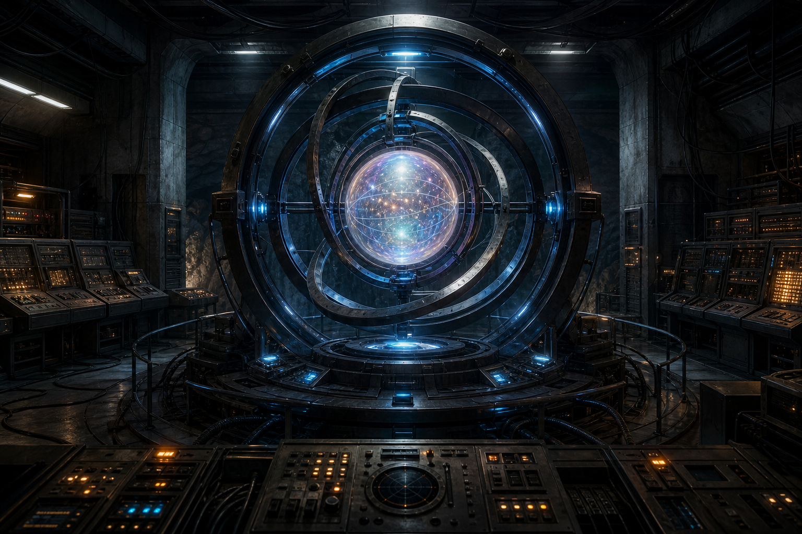

Mysteries & Anomalies
Project Looking Glass
An alleged classified program said to involve timeline viewing, future probability analysis, and devices capable of displaying possible future events.
Visual Archive
There are no verified public photographs of a real Project Looking Glass device. This gallery uses a clearly labeled concept image plus reference visuals connected to the lore: classified-site culture, branching futures, and wormhole-style spacetime ideas.


{kind=link}

{kind=link}

{kind=link}
Core Claim
Project Looking Glass is described in disclosure and conspiracy circles as a hidden technology that could view possible futures or probability timelines. Some versions say it was a machine using electromagnetic rings, gases, plasma, gravity effects, or wormhole physics. Other versions frame it as a consciousness amplifier that projects probable futures into a visible field.
The central claim is not simple time travel. It is usually described as future-probability viewing: operators could supposedly observe branching outcomes and use that information to make decisions, avoid disasters, or steer events.
Where the Story Comes From
Reported Source
Dan Burisch
Dan Burisch is one of the main names tied to Looking Glass lore. He claimed involvement with classified programs connected to Area 51/S-4, stargate technology, future humans, and devices used to observe probable timelines.
Reported Source
Bill Wood / Bill Brockbrader
Bill Wood, also known as William Brockbrader, popularized claims about Looking Glass timeline convergence and elites panicking because different possible futures allegedly collapsed toward the same outcome.
Reported Source
David Wilcock
David Wilcock discussed Looking Glass in the broader context of disclosure, hidden technology, insiders, and future timelines. His version helped introduce the idea to a wider alternative-history and spiritual audience.
Context
Area 51, S-4, and Black Projects
Many Looking Glass stories place the technology in the same mythic geography as Area 51, S-4, Majestic 12, reverse-engineered craft, secret space programs, and classified military research.
Alleged Technology
Descriptions vary widely. Some accounts describe rotating electromagnetic rings, injected gas such as argon, a barrel or chamber, a projection field, and a pearlescent sphere where images appear. Other versions mention counter-rotating plasma, mercury-like effects, artificially generated gravity waves, or wormhole-like spacetime distortions.
These descriptions borrow language from real physics, including relativity, plasma confinement, electromagnetism, and quantum probability. But there is no public technical evidence that such a device exists or ever worked as claimed.
Timeline Convergence and 2012
One of the most famous Looking Glass claims says that as operators looked toward the future, timelines became harder to distinguish and eventually converged around 2012. Some versions say this meant no one could see past a certain point. Others say all possible futures led to a single unavoidable transformation.
This made Looking Glass lore merge with 2012 prophecy, ascension theories, Mayan calendar speculation, disclosure expectations, and claims that elites could no longer control the outcome.
Modern Connections & Claims
Speculative
Future Probability Viewing
The core claim is that hidden operators could observe possible futures, compare timelines, and measure which outcomes were most likely.
Speculative
Decision Engineering
If future probabilities could be seen, then governments, intelligence groups, or hidden elites could theoretically choose actions that push society toward preferred outcomes.
Highly Speculative
Mandela Effect and Timeline Drift
Some connect Looking Glass to the Mandela Effect, claiming shared memory differences may be evidence of timeline interference or reality shifts. This remains unproven.
Interpretive
Connection to Satan's Little Season
Looking Glass connects to little-season research through themes of deception, controlled history, managed futures, hidden rulers, and the idea that humanity may be living inside a manipulated timeline.
Interpretive
Connection to Tartaria and Reset Theories
Old World researchers sometimes connect Looking Glass to reset theories: if a hidden group could view or manipulate timelines, it could explain missing history, rewritten chronology, or sudden civilizational transitions in speculative models.
Research Notes
Track every claim by source. Separate Dan Burisch testimony, Bill Wood interviews, David Wilcock commentary, Project Camelot material, later YouTube summaries, and modern reposts. Much of the lore is repeated without primary documentation.
Useful labels: alleged insider testimony, secondhand claim, spiritual interpretation, technical speculation, cultural influence, and no public evidence. Do not treat physics language as proof unless it connects to verifiable documents or reproducible work.
Open Questions
Is Project Looking Glass a real hidden technology, a symbolic myth about elite planning, a spiritual story about free will, or a modern legend built from the fear that the future is being managed?